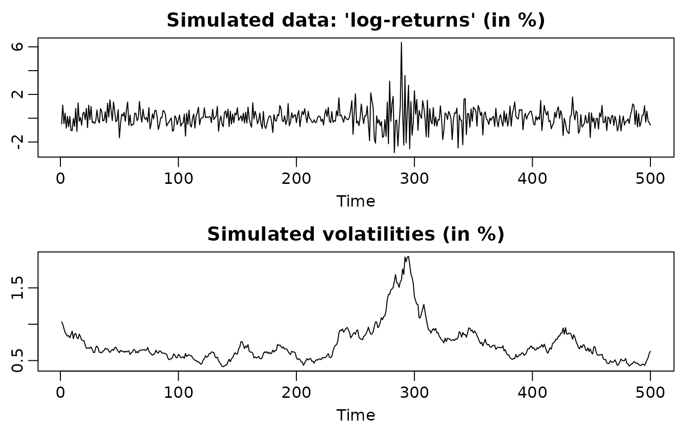
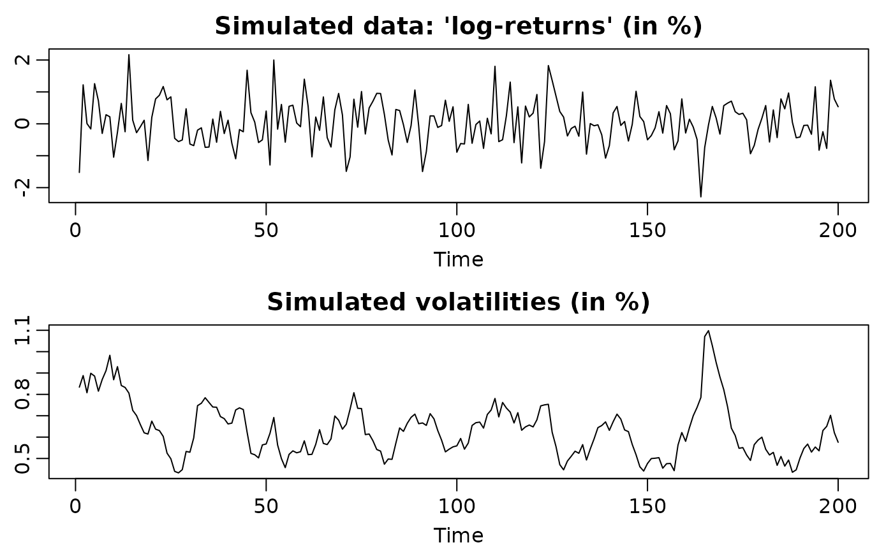
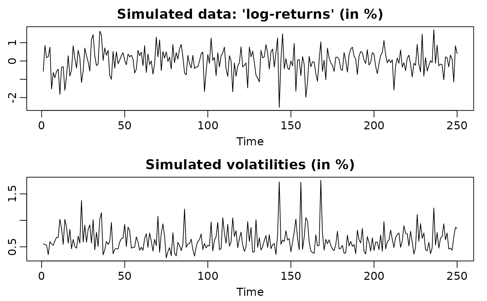

svsim is used to produce realizations of a stochastic volatility (SV)
process.
svsim(len, mu = -10, phi = 0.98, sigma = 0.2, nu = Inf, rho = 0)length of the simulated time series.
level of the latent log-volatility AR(1) process. The defaults
value is -10.
persistence of the latent log-volatility AR(1) process. The
default value is 0.98.
volatility of the latent log-volatility AR(1) process. The
default value is 0.2.
degrees-of-freedom for the conditional innovations distribution.
The default value is Inf, corresponding to standard normal
conditional innovations.
correlation between the observation and the increment of the
log-volatility. The default value is 0, corresponding to the basic
SV model with symmetric “log-returns”.
The output is a list object of class svsim containing
vector of length len containing the simulated data,
usually interpreted as “log-returns”.
vector of length
len containing the simulated instantaneous volatilities.
These are \(e^{h_t/2}\) if nu == Inf, and they are
\(e^{h_t/2} \sqrt{\tau_t}\) for finite nu.
The initial volatility exp(h_0/2),
drawn from the stationary distribution of the latent AR(1) process.
a named list with five elements mu, phi,
sigma, nu, and rho, containing
the corresponding arguments.
vector of the latent state space \(h_t\) for \(t > 0\).
initial element of the latent state space \(h_0\).
vector of length len containing the simulated auxiliary
variables for the Student-t residuals when nu is finite. More precisely,
\(\tau_t\sim\text{Gamma}^{-1}(\text{shape}=\nu/2, \text{rate}=\nu/2-1)\).
This function draws an initial log-volatility h_0 from the stationary
distribution of the AR(1) process defined by phi, sigma, and mu.
Then the function jointly simulates the log-volatility series
h_1,...,h_n with the given AR(1) structure, and the “log-return” series
y_1,...,y_n with mean 0 and standard deviation exp(h/2).
Additionally, for each index i, y_i can be set to have a conditionally heavy-tailed
residual (through nu) and/or to be correlated with (h_{i+1}-h_i)
(through rho, the so-called leverage effect, resulting in asymmetric “log-returns”).
The function generates the “log-returns” by
y <- exp(-h/2)*rt(h, df=nu). That means that in the case of nu < Inf
the (conditional) volatility is sqrt(nu/(nu-2))*exp(h/2), and that corrected value
is shown in the print, summary and plot methods.
To display the output use print, summary and plot. The
print method simply prints the content of the object in a moderately
formatted manner. The summary method provides some summary statistics
(in %), and the plot method plots the the simulated 'log-returns'
y along with the corresponding volatilities vol.
## Simulate a highly persistent SV process of length 500
sim <- svsim(500, phi = 0.99, sigma = 0.1)
print(sim)
#>
#> Simulated time series consisting of 500 observations.
#>
#> Parameters: level of latent variable mu = -10
#> persistence of latent variable phi = 0.99
#> standard deviation of latent variable sigma = 0.1
#> degrees of freedom parameter nu =Inf
#> leverage effect parameter rho =0
#>
#> Simulated initial volatility:
#>
#> Simulated volatilities:
#> [1] 0.006090489 0.006230848 0.006563220 0.006578368 0.006545009 0.006844749
#> [7] 0.006633578 0.005913269 0.005994130 0.005846241 0.005866482 0.005986610
#> [13] 0.005875565 0.005823473 0.005919108 0.005748531 0.005823195 0.005820820
#> [19] 0.005935744 0.006196851 0.005663363 0.005512573 0.005748594 0.005588022
#> [25] 0.005421412 0.005789588 0.005784846 0.005774791 0.005511196 0.005704966
#> [31] 0.005265361 0.005335394 0.005374036 0.005703140 0.006080971 0.005954090
#> [37] 0.005845555 0.005564410 0.006098422 0.005999636 0.006117884 0.005472792
#> [43] 0.005497071 0.005201651 0.005719827 0.005933374 0.005632969 0.005412547
#> [49] 0.005470072 0.005847150 0.005814835 0.006155040 0.006241334 0.006698395
#> [55] 0.006295711 0.006688342 0.007051478 0.006395507 0.006681256 0.006055019
#> [61] 0.006041284 0.005968962 0.006153102 0.006313764 0.006100841 0.006056686
#> [67] 0.006221133 0.005665202 0.005472552 0.005394300 0.005091697 0.005094728
#> [73] 0.004862507 0.004654956 0.004700710 0.004724838 0.004594436 0.004864972
#> [79] 0.004548188 0.004525297 0.004222820 0.004592274 0.004698896 0.004623622
#> [85] 0.004580724 0.004783000 0.004571627 0.004347336 0.004059328 0.004301681
#> [91] 0.004106794 0.004124482 0.004321627 0.003964804 0.004288755 0.004221429
#> [97] 0.004280681 0.003909399 0.003871900 0.004234282
#> [ reached 'max' / getOption("max.print") -- omitted 400 entries ]
#>
#> Simulated data (usually interpreted as 'log-returns'):
#> [1] -4.911436e-03 6.175237e-04 -1.536245e-02 9.296873e-03 -9.789708e-03
#> [6] 5.074146e-03 6.986829e-03 4.351881e-03 3.864703e-03 -5.554726e-03
#> [11] 4.923068e-04 -7.611390e-03 4.105092e-03 7.481729e-03 6.921270e-03
#> [16] 2.525612e-03 -1.543870e-04 -4.131784e-03 4.667267e-03 3.985656e-03
#> [21] -1.402889e-03 -5.762371e-04 -6.683536e-04 4.390949e-03 4.117943e-04
#> [26] 2.616288e-03 1.400186e-03 2.983743e-03 -1.882733e-03 -6.512622e-03
#> [31] -4.931636e-03 -3.766549e-03 2.520927e-03 1.037412e-03 7.272433e-03
#> [36] -6.621384e-03 2.286694e-03 1.684857e-03 -4.591243e-03 -1.104936e-03
#> [41] 1.442035e-03 -2.362850e-03 2.609037e-04 -6.830169e-03 9.698336e-03
#> [46] -3.440229e-03 7.554406e-03 5.115527e-03 1.279701e-02 3.930374e-03
#> [51] -9.885363e-03 8.126024e-03 -4.208220e-03 -1.171291e-02 -6.869445e-03
#> [56] -2.898862e-03 4.988374e-03 -5.492023e-04 -3.835583e-03 -1.665126e-03
#> [61] -4.621238e-04 4.772134e-03 -2.300436e-04 2.539185e-03 6.367384e-03
#> [66] -2.859185e-04 -1.062336e-02 -1.011472e-03 -7.911861e-04 5.076128e-03
#> [71] 4.434008e-03 1.364255e-03 -1.989463e-03 4.747137e-03 2.286582e-03
#> [76] 5.357659e-03 -1.170979e-03 3.146107e-03 -2.900756e-04 2.036128e-03
#> [81] -6.814699e-03 1.196544e-03 -2.659708e-03 2.711861e-03 1.923670e-03
#> [86] 5.849864e-05 -5.151134e-03 -1.392639e-04 5.751180e-03 -2.770263e-03
#> [91] -7.958884e-03 -3.106297e-03 2.591019e-03 -2.297940e-03 5.068554e-03
#> [96] 2.410791e-03 3.400978e-03 -1.623567e-03 2.512001e-04 -1.882535e-03
#> [ reached 'max' / getOption("max.print") -- omitted 400 entries ]
summary(sim)
#>
#> Simulated time series consisting of 500 observations.
#>
#> Parameters: level of latent variable mu = -10
#> persistence of latent variable phi = 0.99
#> standard deviation of latent variable sigma = 0.1
#> degrees of freedom parameter nu = Inf
#> leverage effect parameter rho = 0
#>
#> Simulated initial volatility (in %): 0.6152895
#>
#> Summary of simulated volatilities (in %):
#> Min. 1st Qu. Median Mean 3rd Qu. Max.
#> 0.3434 0.4692 0.5846 0.5934 0.6907 1.0567
#>
#> Summary of simulated data (in %):
#> Min. 1st Qu. Median Mean 3rd Qu. Max.
#> -1.920139 -0.353447 -0.014683 0.008963 0.408838 1.912727
plot(sim)

## Simulate an SV process with leverage
sim <- svsim(200, phi = 0.94, sigma = 0.15, rho = -0.6)
print(sim)
#>
#> Simulated time series consisting of 200 observations.
#>
#> Parameters: level of latent variable mu = -10
#> persistence of latent variable phi = 0.94
#> standard deviation of latent variable sigma = 0.15
#> degrees of freedom parameter nu =Inf
#> leverage effect parameter rho =-0.6
#>
#> Simulated initial volatility:
#>
#> Simulated volatilities:
#> [1] 0.008338458 0.008880990 0.008075504 0.008987808 0.008855541 0.008148748
#> [7] 0.008697172 0.009110644 0.009830815 0.008684484 0.009298702 0.008415853
#> [13] 0.008323613 0.008059879 0.007253550 0.007007782 0.006587386 0.006200164
#> [19] 0.006144212 0.006748373 0.006372142 0.006304258 0.006032174 0.005250263
#> [25] 0.004986820 0.004395955 0.004325675 0.004477454 0.005328740 0.005292960
#> [31] 0.005965971 0.007472330 0.007584560 0.007843738 0.007623391 0.007409060
#> [37] 0.007398164 0.006960961 0.006864605 0.006616476 0.006655468 0.007270131
#> [43] 0.007369071 0.007289307 0.006225896 0.005238299 0.005174300 0.005027044
#> [49] 0.005635147 0.005679721 0.006179669 0.006919560 0.005629980 0.004991538
#> [55] 0.004571021 0.005190371 0.005356209 0.005265317 0.005315633 0.005827262
#> [61] 0.005180513 0.005194076 0.005663112 0.006348107 0.005704691 0.005651361
#> [67] 0.005917309 0.006988104 0.006794076 0.006371792 0.006600791 0.007306225
#> [73] 0.008079955 0.007348849 0.007336404 0.006117293 0.006144707 0.005828183
#> [79] 0.005419185 0.005344613 0.004731805 0.004973718 0.004960223 0.005709809
#> [85] 0.006429702 0.006269037 0.006645842 0.006925089 0.007076182 0.006627239
#> [91] 0.006663844 0.006548865 0.007096818 0.006854938 0.006305539 0.005857735
#> [97] 0.005308742 0.005436982 0.005544415 0.005591087
#> [ reached 'max' / getOption("max.print") -- omitted 100 entries ]
#>
#> Simulated data (usually interpreted as 'log-returns'):
#> [1] -1.524235e-02 1.222621e-02 8.970038e-05 -1.611000e-03 1.260146e-02
#> [6] 7.216114e-03 -3.024032e-03 2.857237e-03 2.200842e-03 -1.046346e-02
#> [11] -2.603176e-03 6.401428e-03 -2.486555e-03 2.168678e-02 1.160464e-03
#> [16] -2.772979e-03 -9.214033e-04 1.125625e-03 -1.149443e-02 2.004868e-03
#> [21] 7.806915e-03 8.965187e-03 1.170220e-02 7.527350e-03 8.454965e-03
#> [26] -4.543596e-03 -5.570964e-03 -5.048761e-03 4.721598e-03 -6.328053e-03
#> [31] -6.834463e-03 -1.980338e-03 -1.249217e-03 -7.366168e-03 -7.269551e-03
#> [36] 1.498747e-03 -5.776299e-03 3.927545e-03 -3.050490e-03 1.144801e-03
#> [41] -6.118984e-03 -1.095844e-02 -1.786300e-03 -2.491504e-03 1.680347e-02
#> [46] 3.510537e-03 5.299820e-04 -5.862796e-03 -5.022173e-03 4.014032e-03
#> [51] -1.290952e-02 2.000760e-02 -1.675129e-03 6.078008e-03 -5.750109e-03
#> [56] 5.486011e-03 5.832749e-03 2.577942e-04 -9.050794e-04 1.399937e-02
#> [61] 5.461340e-03 -1.036705e-02 2.137256e-03 -2.040630e-03 8.430626e-03
#> [66] -4.322869e-03 -7.272015e-03 4.367087e-03 9.535111e-03 2.741498e-03
#> [71] -1.491601e-02 -1.039682e-02 7.726452e-03 -1.063277e-03 1.013089e-02
#> [76] -3.185703e-03 4.974073e-03 7.101119e-03 9.553824e-03 9.502744e-03
#> [81] 2.932198e-03 -5.096074e-03 -9.766088e-03 4.503705e-03 4.168869e-03
#> [86] -3.053125e-04 -5.846729e-03 -5.374130e-04 1.060473e-02 -7.096052e-04
#> [91] -1.496398e-02 -8.704496e-03 2.492890e-03 2.465643e-03 -1.127059e-03
#> [96] -5.341059e-04 7.408120e-03 7.709498e-04 5.353477e-03 -8.910425e-03
#> [ reached 'max' / getOption("max.print") -- omitted 100 entries ]
summary(sim)
#>
#> Simulated time series consisting of 200 observations.
#>
#> Parameters: level of latent variable mu = -10
#> persistence of latent variable phi = 0.94
#> standard deviation of latent variable sigma = 0.15
#> degrees of freedom parameter nu = Inf
#> leverage effect parameter rho = -0.6
#>
#> Simulated initial volatility (in %): 0.8550582
#>
#> Summary of simulated volatilities (in %):
#> Min. 1st Qu. Median Mean 3rd Qu. Max.
#> 0.4326 0.5338 0.6226 0.6330 0.7031 1.0983
#>
#> Summary of simulated data (in %):
#> Min. 1st Qu. Median Mean 3rd Qu. Max.
#> -2.289762 -0.492879 -0.003456 0.040971 0.535373 2.168678
plot(sim)

## Simulate an SV process with conditionally heavy-tails
sim <- svsim(250, phi = 0.91, sigma = 0.05, nu = 5)
print(sim)
#>
#> Simulated time series consisting of 250 observations.
#>
#> Parameters: level of latent variable mu = -10
#> persistence of latent variable phi = 0.91
#> standard deviation of latent variable sigma = 0.05
#> degrees of freedom parameter nu =5
#> leverage effect parameter rho =0
#>
#> Simulated initial volatility:
#>
#> Simulated volatilities:
#> [1] 0.005553025 0.005457109 0.005299393 0.003527813 0.005965004 0.005542267
#> [7] 0.005280419 0.006133491 0.006774340 0.006756833 0.010211192 0.008479525
#> [13] 0.005454239 0.010175244 0.008749940 0.005680680 0.008294463 0.004642532
#> [19] 0.006394820 0.005073414 0.004744374 0.007026672 0.005688129 0.013745713
#> [25] 0.005892174 0.009099812 0.005867088 0.008302326 0.009155261 0.005718447
#> [31] 0.010133812 0.004426082 0.007760599 0.005071137 0.010151247 0.011436894
#> [37] 0.003484494 0.004425559 0.006011443 0.005460386 0.006026193 0.009601881
#> [43] 0.003679149 0.004552199 0.004669078 0.004593812 0.005914073 0.006544915
#> [49] 0.006675901 0.009241718 0.005054718 0.008706087 0.008051288 0.004742378
#> [55] 0.004926194 0.004919277 0.006882478 0.005892224 0.004358864 0.004913649
#> [61] 0.004340838 0.006624047 0.007462027 0.004906747 0.007608479 0.006083942
#> [67] 0.004185144 0.006401360 0.005234482 0.010761871 0.003977117 0.007594833
#> [73] 0.009328378 0.006978218 0.002915970 0.004085892 0.004861986 0.003316683
#> [79] 0.007666233 0.003853979 0.003280668 0.005844495 0.005231521 0.004290070
#> [85] 0.005447053 0.012144406 0.004912601 0.005522642 0.005592465 0.006459112
#> [91] 0.004464310 0.003250707 0.004981092 0.006017557 0.006353904 0.007411438
#> [97] 0.004499689 0.005636392 0.004791613 0.005311620
#> [ reached 'max' / getOption("max.print") -- omitted 150 entries ]
#>
#> Simulated data (usually interpreted as 'log-returns'):
#> [1] -5.686625e-03 8.422217e-03 1.797024e-03 2.353950e-03 7.542962e-03
#> [6] -1.530306e-02 -6.354560e-03 -9.162533e-03 -5.659604e-03 -4.477114e-03
#> [11] -1.825921e-02 -3.443399e-03 -3.149292e-03 -1.603672e-02 -8.161504e-03
#> [16] 2.844493e-03 -8.225803e-03 -5.037816e-03 8.304950e-03 1.331255e-03
#> [21] -3.804644e-03 5.794631e-03 1.833952e-03 -1.177451e-02 -5.455883e-03
#> [26] 7.032964e-03 2.903210e-03 -5.351055e-04 -5.507261e-03 1.172882e-02
#> [31] 1.434452e-02 2.824736e-03 -2.496142e-03 -1.608868e-03 1.623306e-02
#> [36] 1.404112e-02 3.176867e-04 7.103223e-03 3.077695e-03 5.824145e-03
#> [41] -7.979285e-03 -1.003510e-02 5.126733e-03 -3.946720e-03 4.986138e-03
#> [46] -1.464037e-03 5.402831e-04 2.931804e-03 4.535594e-03 2.519839e-04
#> [51] -2.077462e-03 3.680898e-03 2.246800e-03 3.138791e-03 1.033452e-03
#> [56] -6.615072e-03 -4.430116e-03 5.776281e-03 2.850545e-03 4.800202e-03
#> [61] -2.579978e-03 8.348862e-03 -6.310799e-03 3.771888e-03 -2.020676e-03
#> [66] 7.121470e-06 -7.191016e-03 -1.519036e-03 1.299392e-02 2.279202e-03
#> [71] 1.152401e-02 -5.262122e-03 5.123518e-03 1.526963e-03 4.960417e-03
#> [76] -2.824604e-04 2.083855e-03 -4.373191e-03 8.932665e-03 -9.057044e-04
#> [81] 4.554141e-03 1.026119e-03 6.728081e-03 9.070752e-03 2.446026e-03
#> [86] -6.554445e-03 -7.615631e-03 3.029044e-03 -1.570984e-03 -3.794629e-03
#> [91] 3.054914e-03 -4.166510e-03 -3.235420e-03 -3.238975e-03 -7.416786e-05
#> [96] 3.953342e-03 4.859308e-03 -1.671626e-02 -5.602963e-03 3.474330e-03
#> [ reached 'max' / getOption("max.print") -- omitted 150 entries ]
summary(sim)
#>
#> Simulated time series consisting of 250 observations.
#>
#> Parameters: level of latent variable mu = -10
#> persistence of latent variable phi = 0.91
#> standard deviation of latent variable sigma = 0.05
#> degrees of freedom parameter nu = 5
#> leverage effect parameter rho = 0
#>
#> Simulated initial volatility (in %): 0.6268978
#>
#> Summary of simulated volatilities (in %):
#> Min. 1st Qu. Median Mean 3rd Qu. Max.
#> 0.2916 0.4799 0.5900 0.6372 0.7447 1.7563
#>
#> Summary of simulated data (in %):
#> Min. 1st Qu. Median Mean 3rd Qu. Max.
#> -2.53385 -0.39112 0.01631 -0.02464 0.36946 1.70174
plot(sim)
